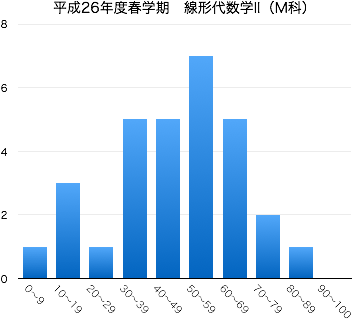

連絡事項
- 8/18：期末試験の解答および，得点分布（このページの最下部を参照）などを公開しました．
- 7/28：本日は期末試験でした．これをもってこの授業はすべて終了しました．
- 7/14：東武線遅延の影響で授業が35分しか行えなかったので，7月14日（月）と15日（火）の6時限に補講を実施します．両日とも，内容は同じなので，都合がいい日に出席してください（場所はいつも授業を行っている教室です）．
- 5/30：6月2日に小テストを実施します（授業時間内，30分程度）．出題範囲は「行列式の計算」「余因子行列の性質を用いた逆行列の計算」です．授業中の問題演習で解いてもらった問題，または例題として解説した問題の中から出題します（これまでのノート，答案を確認してください）．
-
4/7：このページを公開しました．
-
Twitterでこの授業についてツイートしていきます（ハッシュタグは#14S線形代数2M．ツイログはこちら）．質問，意見などのリプライを歓迎します．
-
授業に対する基本的な考え方にも目を通しておいてください．
授業の目的
ベクトルや行列を扱う線形代数学は抽象的であるがゆえに、その概念や技法は数学はもちろんのこと、工学のさまざまな分野でも応用されている。 線形代数学の考え方を身につけるために、行列式、1次変換、固有値・固有ベクトルについて学習する。行列式の性質を利用した計算技法を身につけるとともに、行列の幾何学的側面も理解する。
達成目標
- 行列式の定義を理解し、説明できる。
- 行列式の性質を利用した演算ができる。
- 逆行列と行列式の関係を理解し、それを利用して逆行列を求めることができる。
- 1次変換の定義を理解し、1次変換を表わす行列を求めることができる。
- 固有値・固有ベクトルの定義を理解し、それを求めることができる。
- 行列の対角化の意味や目的を理解し、対称行列の対角化を行うことができる。
- 行列の対角化を2次形式・2次曲線へ応用することができる。
科目の位置づけ
- この科目では、線形代数学の基礎として、行列式の性質を利用した計算技法や固有値・固有ベクトルを取り扱う。また、先行科目である「線形代数学Ⅰ」では、線形代数学の導入として、行列や行列式について学習する。
- 「線形代数学Ⅰ」と併せて履修することにより、線形代数学の基礎知識を習得することができる。
- また、工学集中コースの学生を対象にした科目であり、これまでの学習履歴に応じた問題演習を実施する。
-
線形代数I → 線形代数II
授業の予定と記録
| 第1回 |
4月 |
7日（月） |
ガイダンス，線形代数Iの復習 |
| 第2回 |
|
14日（月） |
行列式 第3章 §1.1 ，行列式の基本性質[I] 第3章 §1.2 (p.75, 76) |
| 第3回 |
|
21日（月） |
行列式の基本性質[II]〜[VIII] 第3章 §1.2 (p.76-82) |
| 第4回 |
|
28日（月） |
行列式の展開 第3章 §2.1 |
| 第5回 |
5月 |
12日（月） |
高次の行列式 第3章 §2.2 |
| 第6回 |
|
19日（月） |
逆行列 第4章 §2.2(p.133-137) |
| 第7回 |
|
26日（月） |
1次変換 第5章 §1.1 |
| 第8回 |
6月 |
2日（月） |
回転 第5章 §1.2
小テスト（中間試験） 問題 解答
|
| 第9回 |
|
9日（月） |
直交行列 第5章 §1.2 ，1次変換の合成 第5章 §1.3 |
| 第10回 |
|
16日（月） |
1次変換の逆変換 第5章 §1.3
固有値・固有ベクトルの定義と固有多項式 第5章 §2.1 |
| 第11回 |
|
23日（月） |
固有値・固有ベクトルの求め方 第5章 §2.1 |
| 第12回 |
|
30日（月） |
行列の対角化 第5章 §2.2 |
| 第13回 |
7月 |
7日（月） |
対称行列の対角化 第5章 §2.2 |
| 第14回 |
|
14日（月） |
これまでの復習，2次形式の標準化へ
|
| (補講) |
|
|
（6時限） 2次形式の標準化 第5章 §2.3
|
| (補講) |
|
15日（火） |
（6時限） 2次形式の標準化 第5章 §2.3
|
|
|
28日（月） |
期末試験 (10:40 -- 11:40, 1-254教室) 問題 解答 |
教科書・参考文献について
- 矢野健太郎・石原繁編 『線形代数』 裳華房 » リンク
- 矢野健太郎・石原繁編『問題集 線形代数』裳華房 » リンク
評価について
- 期末試験80点，小テスト・演習課題など20点の配点で評価する．
- 中間期にミニ中間試験を実施する（10点）．
- 毎回の授業で問題演習を実施する（手順は以下）．
- 教科書等の問題を指定し，指定の答案用紙に解答．
- 一定時間の後，各自答え合わせ（必要に応じて解説）．
- 授業終了時に答案用紙を回収．
1回の提出につき1点を加点する（合計10点）．
ほぼ白紙の答案や，単に解答を書き写しただけと思われる場合は加点しない．
期末試験の得点分布と評価など
|  |
| 履修者 | 39 |
| 受験者 | 30 |
| AA | 0 |
| A | 1 |
| B | 2 |
| C | 8 |
| D | 19 |
| 未受験 | 9 |
| 単位修得者 | 11 |
| 単位修得率 | 36.7% |
|